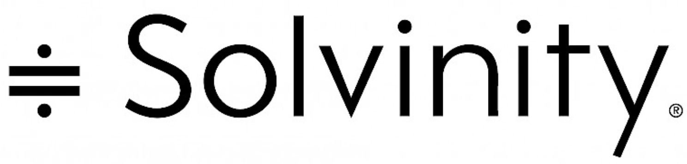
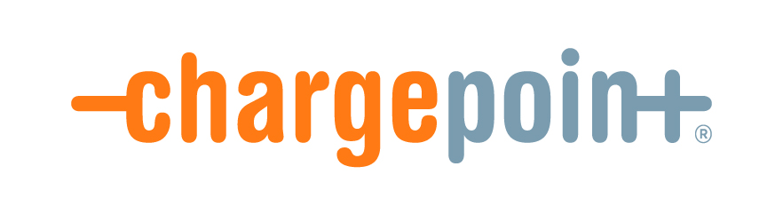

Revolutionize your IT automation with our innovative solutions designed to simplify complex tasks and enhance efficiency.
I use the latest technology and best practices to automate a range of IT functions, from managing infrastructure and deploying applications
to automating workflows and streamlining operations.
About me
I’m Kevin — a platform and automation engineer who goes above and beyond to deliver results.
Ship faster: CI/CD and Infrastructure as Code at scale
Stay reliable: observability, alerting, and SRE practices
Stay secure: identity, hardened baselines, and smart networking
Expanding your business horizons
LocationAmsterdam, Netherlands
Degrees
Master of Science (MSc) — IT Security & Network Engineering
Bachelor of Science (BSc) — IT System & Network Engineering
Associate of Science (ASc) — IT System Administrator
Emailinfo@ixtion.nl
Availability--
Facts
Over the years I can state these facts.
Happy clients
Secured environments
Years in Unix
Coding hours
Skills
A concise snapshot of tools and domains I work with regularly.
Automation & DevOps
Ansible
CI/CD Pipelines
Azure DevOps
Infrastructure as Code
Vagrant
Git
Programming & Scripting
Python
Bash
Linux
Cloud
VMware
Docker/Podman
K8s
AWS
Azure
OpenStack
Networking & Security
TCP/IP
Firewalling
TLS/SSL
DNS(SEC)
OpenVPN/WireGuard
OSI Model
Load Balancing
HAProxy
pfSense
Keycloak
OpenLDAP
Web & Servers
Nginx
Apache
Postfix
Squid
Databases
MariaDB/MySQL/Percona
PostgreSQL
Redis
MongoDB
Monitoring & Observability
Zabbix
Nagios
Prometheus
Grafana
ELK
Splunk
Checkmk
Professional
Leadership
Troubleshooting
Virtualization
Testimonials
Kevin wants to book results, is pragmatic but not without principles. He wants to share his creativity on his way without too much limitions with regards to freedom.
P. Wolring
Sr. IT Engineer
He can focus on one thing and deep-dive into a single subject, but then also switch very quickly when the situation requires it.
K. van Es
IT Engineer
Actually works in the DevOps spirit. Is careful, and is a teamplayer, but does not want interaction all the time.
T. de Jong
Sr. DevOps Engineer
You can see that he has ambition for IT and is really curious about how the techniques work.
A. Mulder
Site Reliability Engineer
He has a lot of experience and is quite confident.
Does not have a 9to5 mentality, and when required he works in the weekends.
E. de Kamps
IT Manager
Resume
Happy clients


Education
Master of Science - Security & Network Engineering
2017 - 2018
University of Amsterdam, Amsterdam
With proud, I can say I've gained the title of a Master of Science in these very intense years. The education emphasized on Security.
Bachelor of Science - System & Network Engineering
2012 - 2016
Hogeschool van Amsterdam, Amsterdam
I've gained the title of a Bachelor of Science in these four years. The education emphasized on Security, System engineering and programming.
Researcher
2017 - 2018
FoxIT, Delft
As a Researcher I conducted a research to break CAPTCHAs on the dark web using machine learning. We trained a machine learning tool which in turn could
break the CAPTCHAs and pass that result to a web scraper, to scrape forums
on the dark web in an automated fashion.
The report can be read here.
As a Researcher I developed an automated, modular and portable test
suite to perform end-to-end tests for e-mail components, e.g. DMARC
and DANE. To support the tests, I setup seven mail servers and automated
their configuration. The mail servers have intentional flaws in configuration and DNS records to simulate different scenarios.
The report can be read here.
Read more ...
Associate of Science - IT System Administrator
2009 - 2012
Horizon College, Alkmaar
I've gained the title of a Associate of Science in these three years.
Professional Experience
Automation Engineer
2024 - present
Rijksoverheid, The Hauge
Ansible all the way
Read more ...
Technical Leader
2023 - 2024
ING, Amsterdam
As a technical lead for the automation team, I led initiatives at ING in Amsterdam.
My world revolves around leading a dynamic team through the challenges and triumphs of tech-driven solutions.
In essence, I lead the team on technical level.
I provide the team technical feedback, give hackathons and challenge them, to achieve operational excellence.
Beyond guiding the team, I actively participate in strategic planning sessions with senior management to align our roadmaps with the company's long-term goals.
My responsibilities and accomplishments extend well beyond the day-to-day management of the team.
Perhaps one of my most ambitious undertakings is the complete overhaul of our monitoring stack, used to oversee more than 500 virtual machines.
Recognizing the limitations of our existing system, I envisioned a solution that leveraged automation to redefine how we manage and configure Prometheus and Grafana.
With this new system, newly joined virtual machines are automatically integrated into the monitoring stack, eliminating the manual overhead and ensuring immediate oversight.
This innovation not only enhanced our operational efficiency but also provided us with real-time insights, allowing us to preemptively address issues before they impact our services.
Read more ...
Ansible Specialist
2022 - 2023
DXC, Amsterdam
As an Ansible specialist, I was deployed at a government instance.
I provide sound advice on future technical strategies choices and that has been a valuable part of my job.
I design and build technical strategies, while at the same time I enable
the vision of management, to improve customer satisfaction.
On a daily basis I solve complex customer requirements, while I apply
operational best practices to e.g. reduce security risks or increase system
performance. I lead the team to improve our way of working using Ansible. For example, we consolidated our wiki's, we want to perform multiple production
deployments during the day, and improve 'the old mess' that nobody wants
to touch. Also, OS patching was (still) done manually, which I've now
fully automated. In short, I focus on deployment strategies, reliability,
automation, maintainability, and security.
Read more ...
Platform Engineer
2021 - 2022
ABN AMRO, Amsterdam
As a Platform Engineer, my primary responsibility is ensuring the continuity of our on-premise internal API gateway platform. I am dedicated to resolving customer tickets promptly and efficiently, while continuously improving our systems through the refinement of old Ansible playbooks, bash scripts, and Python scripts. Additionally, I take an active role in enhancing our Agile WoW methodology by providing suggestions for fundamental improvement. Recently, I led a migration project to upgrade our application landscape from RHEL 7 to 8. One of my most significant contributions to the team has been the development of a custom Ansible role that automates certificate requests, renewal, and revocation, saving valuable time and minimizing human error.
As a Cloud Consultant, I conduct 'Well Architected Reviews' for our customers. This is to ensure their cloud environment is aligned with the '6
pillars of AWS'.
I've created a serverless program in Lambda using Python, let me in short
explain how it worked.
Customers could make a web request to download a secure file. The
request went to the Amazon API gateway, which in turn send the request further to CloudFront, which in turn activated the Lambda function. Based on the request, the Lambda function send a text to the customer, using the SNS service. The text contained a secret which was only
valid for 5m. The secret was fetched from DynamoDB, which was created when the initial request came through. In this same moment, the
Lambda function places more meta-data in the DynamoDB.
The customers then received an e-mail of the website from where they
could download the secure file. The website was hosted on a S3 bucket.
I've modelled the infrastructure in templates and provisioned it via CloudFormation.
During the last two months of my employment, I had the privilege of working as a Site Reliability Engineer (SRE) at Booking.com, specifically in their financial department. In this role, I contributed to a migration project by conducting and automating several technical tasks to facilitate a smooth transition. As an SRE, I was able to leverage my skills and expertise to enhance efficiency and streamline operations. Although my time at Booking.com was brief, I was proud to have contributed to the project and to have gained valuable experience in a dynamic and challenging environment.
Read more ...
Lead Linux Engineer
2020 - 2021
Solvinity, Amsterdam
As a lead engineer for several customers, I lead in life cycle management
projects together with the customers to migrate them from old to new
platforms. E.g. from Ubuntu 14.04 to CentOS 7. I design and build
the environments, configuring these in an automated and idempotent
fashion using Ansible. Besides supporting the workload of the daily operations and solving daily customer requests, I was selected to work on
internal projects to improve automation across all teams within the company using Rundeck. To note, I was challenged here once by another
team. They called me up because they spend all night figuring out what
suddenly the performance issue was on their Kubernetes platform. As I
was unfamiliar in this environment, I still managed to find the root cause and therefore
implement a proper solution.
Read more ...
Linux Engineer
2020 - 2020
True, Amsterdam
As a skilled Linux Engineer, I played a vital role in resolving complex incidents and problems for True's largest customers. My expertise and experience enabled me to tackle a wide range of IT-related issues, including those related to site performance and database optimization. In addition to incident management, I was responsible for building and configuring environments in either Azure or the True cloud. I took the initiative to propose a plan to improve daily working processes and automate systems in a smarter way, leading to the development of an Ansible role that deploys a database with auto-scaling functions. My dedication to excellence did not go unnoticed, as I was asked to take on the role of IT Architect within the company just before leaving.
Read more ...
DevOps Engineer
2019 - 2020
Viriciti, Amsterdam
As a DevOps Engineer I designed and build Kubernetes clusters, hosted on AWS. Besides my responsibility for the cluster I made choices which applications are used for different teams. I also conducted several internal projects, e.g.
Developed a Python wrapper around the Pritunl API, to enable Infrastructure as Code
Created a dashboard to provide in-depth insight about the costs of AWS. The dashboard was shown on a screen in the office
Automated the deployment process MongoDB clusters in AWS, using Ansible and Python. I was responsible for the internal IT components, e.g. switches, WiFi controller, and Raspberry Pi's
I was also included in the process of hiring new developer interns.
Read more ...
Continuity Engineer
2019 - 2019
Sentia, Amsterdam
As a Continuity Engineer, my primary responsibility was to ensure the continuity of customer applications hosted in a private cloud environment. This involved managing the heavy workload of daily operations, such as fixing issues and fulfilling customer requests, to ensure smooth and uninterrupted service.
In addition to daily operations, I also contributed to various projects aimed at improving and optimizing the private cloud environment. For example, I played a key role in building a self-service deployment center for customers, which enabled them to deploy and manage their applications with greater flexibility and efficiency.
As part of my role, I also served as a Lead Engineer for several customers, providing guidance and support to ensure their specific needs and requirements were met. This involved collaborating closely with customers to understand their business needs and technical requirements, and providing tailored solutions to meet their unique needs.
Overall, my work as a Continuity Engineer required a high level of technical expertise, as well as strong problem-solving and project management skills to ensure the smooth and uninterrupted operation of customer applications.
Read more ...
DevOps Consultant
2018 - 2019
Bright Cubes, Amsterdam
In my role as a DevOps consultant, I had the pleasure of working with Rabobank in Utrecht. I was responsible for driving further automation of the environment using Ansible and building robust CI/CD pipelines within the organization. As part of my commitment to elevating the DevOps level, I provided support to multiple engineering and development teams to help them improve their practices. Additionally, I had the opportunity to make a significant impact by further developing an internal API using Python. Through my efforts, I was able to help Rabobank to enhance their overall efficiency and productivity.
Read more ...
Continuity Engineer
2016 - 2017
Sentia, Amsterdam
In my role as a Continuity Engineer, I was responsible for ensuring the smooth functioning of customer applications active on the Sentia Cloud. My daily operations included building customer environments, handling deployments, and addressing customer tickets. I had the privilege of working on a major project to migrate the on-premise IT environment of Centralpoint, a key customer, to a private cloud. This project involved automating the new environment with Ansible, with over 100 VM's redundantly set up over multiple data centers. Through my efforts, I was able to ensure a seamless and efficient migration process, and helped to position Sentia as a trusted and reliable provider of cloud services.
Read more ...
Operations Engineer
2012 - 2013
Encis, Hoorn
As an Operations Engineer, I have been responsible for managing and maintaining the IT environments of our valued clients.
My daily tasks include ensuring seamless IT continuity, both on-site and remotely.
I take pride in optimizing systems to ensure maximum efficiency and performance.
I have also played a key role in setting up new servers and implementing specialized software for clients.
Additionally, I have served as an operational VoIP administrator for over 200 clients, delivering exceptional service and support.
Read more ...
Operations Engineer
2011 - 2012
ICM+, Hoorn
As an Operations Engineer, I provided comprehensive support for a diverse range of customers, with a particular focus on Windows-related incidents.
My expertise includes the configuration of complex systems, servers, and routers to ensure seamless performance and reliability.
I am adept at troubleshooting issues quickly and effectively, enabling our customers to get back up and running with minimal downtime.
In addition, I am always available to work on customer requests, ensuring prompt and efficient service delivery.
Whether support was needed with hardware, software, or network-related issues, I solved the issues by my expertise.
Say goodbye to manual processes and welcome a streamlined, scalable approach to IT automation.
Transform your operations and unlock new levels of productivity and success.